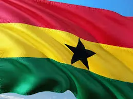

About Me
My name is Benjamin Ayiku, I am from Ghana. I am currently studying software development, learning how to play chess and I like reading.

Ghana, Accra

Ghana is a country located in West Africa, known for its rich history, cultural diversity, and political stability. Ghana was the first sub-Saharan African country to gain independence from colonial rule in 1957. Its capital is Accra, and the country is renowned for its gold, cocoa, and vibrant traditions, including colorful festivals, music, and dance.